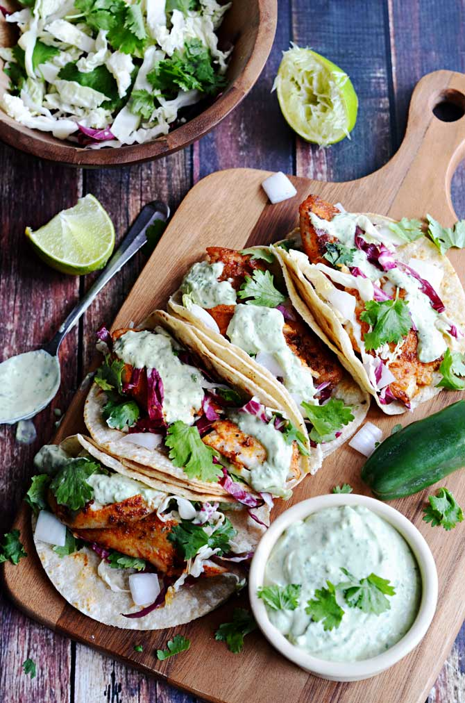

Blackened Fish Tacoss

Tilapia with a spicy, blackened seasoning for fish tacos with an avocado cilantro cream sauce
Ingredients:
For The Blackened Fish:
- 1.5 lbs tilapia fillets
- 1 ½ teaspoons smoked paprika
- 1 teaspoon garlic powder
- 1 teaspoon dried oregano
- 1 teaspoon onion powder
- ½ teaspoon cumin
- ½ teaspoon salt
- ½ teaspoon brown sugar
- 1/4 teaspoon cayenne pepper
- 2 tablespoons canola oil
- 12 corn tortillas
For The Slaw:
- ½ red cabbage, sliced thin
- ¼ green cabbage, sliced thin
- ½ medium-sized onion, diced
- ½ cup cilantro
- Juice of 1 lime
For The Avocado-Cilantro Sauce:
- ½ cup sour cream
- 1 ripe avocado, pitted and skinned
- ¼ cup cilantro, chopped
- Juice of 1 lime
- 1 jalapeno, chopped and seeded
- Salt, to taste
Steps:
- In a small bowl, combine the smoked paprika, garlic powder, dried oregano, onion powder, cumin, salt, brown sugar, and cayenne pepper. Sprinkle the mixture over both sides of your tilapia fillets, and then rub the seasonings in.
- Combine all of the Avocado-Cilantro Sauce ingredients in a food processor or blender. Pulse until well-combined.
- Combine all of the Slaw ingredients in a large bowl and mix well.
- Heat the oil in a heavy-bottomed pan over medium-high heat. Once heated, add in the tilapia (a few at a time if you can’t fit them all at once). Cook for 4-5 minutes on each side, or until the outside is blackened and the fish flakes apart easily.
- Remove the fish from the heat, and if desired, warm the corn tortillas in the same skillet over medium heat, cooking for about 30 seconds on each side.
- Break up the tilapia into 2-3″ pieces. Stack the tortillas in twos. Distribute the fish evenly between the 6 sets of tortillas, and top with Slaw and Avocado-Cilantro Sauce. Serve.
Recipe from Host the Toast.